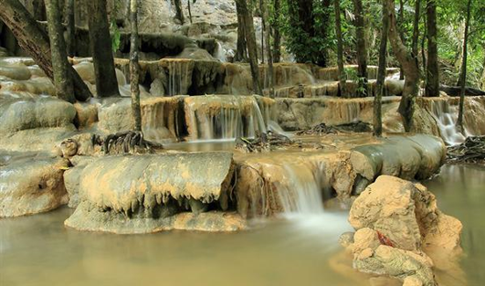
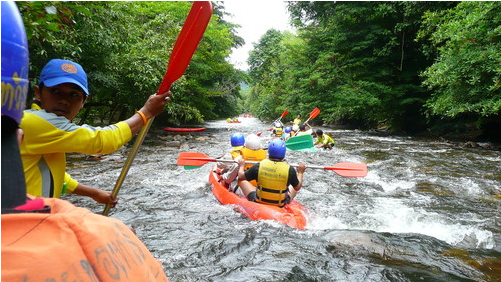

ตั้งอยู่ในหมู่ที่ 10 ตำบลน้ำผุด อำเภอเมืองละงู ห่างจากเขตเทศบาลตำบลกำแพง 28 กิโลเมตร สถานที่สำคัญที่ตั้งอยู่ใกล้น้ำตกวังสายทอง คือโรงเรียนบ้านวังสายทอง ซึ่งเปิดสอนตั้งแต่ระดับอนุบาลถึงมัธยมศึกษา น้ำตกตั้งอยู่ริมถนนสายทุ่งนางแก้ว-วังสายทอง ถนนลาดยางตลอด สามารถเดินทางไปเที่ยวได้ตลอดปี ต้นน้ำของน้ำตกวังสายทองเกิดจากคลองวังน้อยสายน้ำเกิดจากการทะลักของน้ำในถ้ำใต้ภูเขา ไหลออกมาตามช่องเขาลงสู่แอ่งน้ำต่างๆ ที่รองรับด้านล่างลักษณะเป็นชั้นๆ จุดเด่นของน้ำตกคือมีพื้นดินเป็นหินปนทราย บริเวณก้อนหินจะไม่เกิดตะไคร่น้ำจับ สามารถเดินข้ามไปมาได้สะดวก ไม่เกิดอุบัติเหตุ ความงามของน้ำตกวังสายทองจึงอยู่ที่แอ่งน้ำแต่ละชั้นลดหลั่นกันลงมาจากชั้นบนสุดถึงต่ำสุดคล้ายดอกบัวคือส่วนบนจะแคบ ส่วนข้างล่างจะกว้างออก แต่ละชั้นเดินข้ามไปมาได้ง่าย มีต้นมาขึ้นแซมสลับใช้จับเกาะได้ รอบๆน้ำตกมีตกไม้ใหญ่น้อย ช่วยให้บรรยากาศร่มรื่น เหมาะที่จะไปเที่ยวพักผ่อนหย่อนใจเป็นอย่างดี ผู้ที่ไปเที่ยวน้ำตกวังสายทอง ปะเหมาะโชคดีอาจได้พบกับคนพื้นเมืองคือ “เงาะป่า” หรือพวกนิกริโต ซึ่งย้ายถิ่นไปมา อาจจะออกมาพบปะผู้คนในท้องที่ ได้พบเห็นชาวเงาะป่า ซึ่งวีถีชีวิตแตกต่างจากคนทั่วไป ยังดำรงชีวิตแบบย้อนยุค เป็นคนป่าคนดง ยังมีให้พบเห็นได้แถบป่าเขาตอนเหนือของอำเภอละงู

